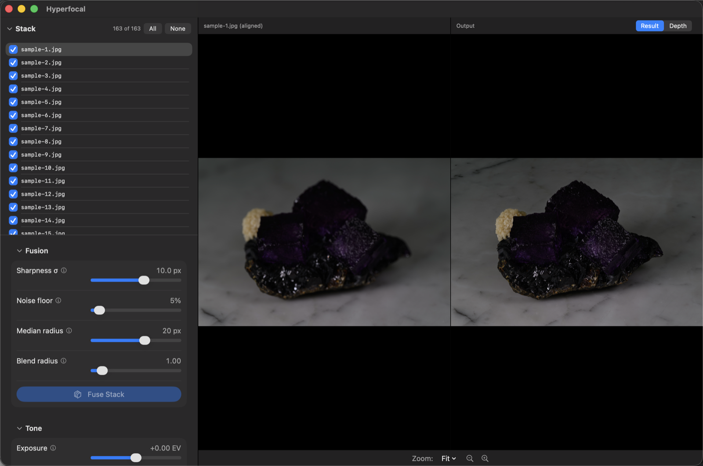
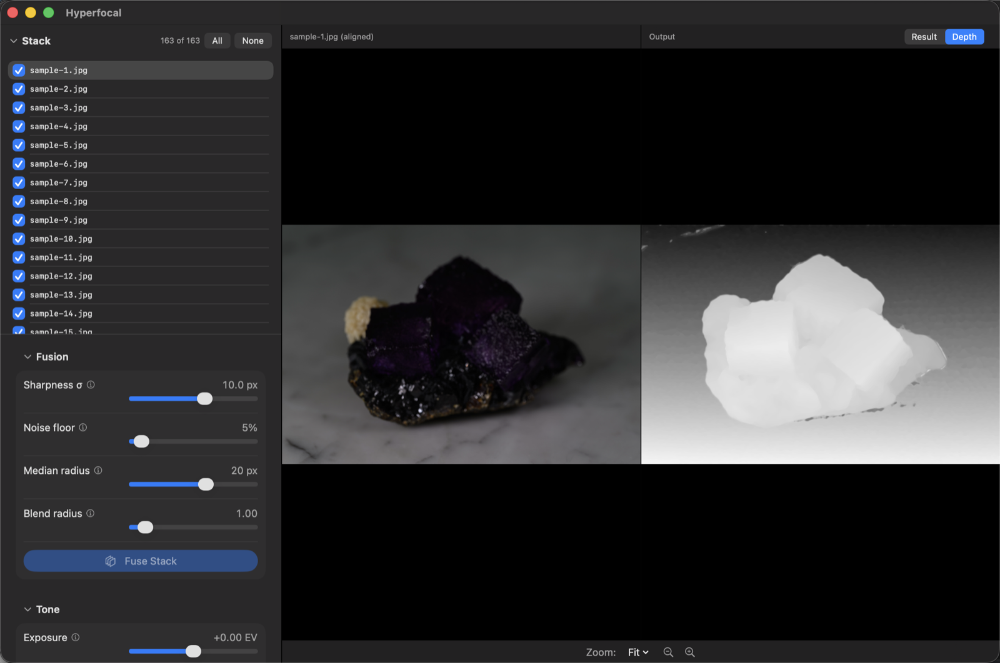
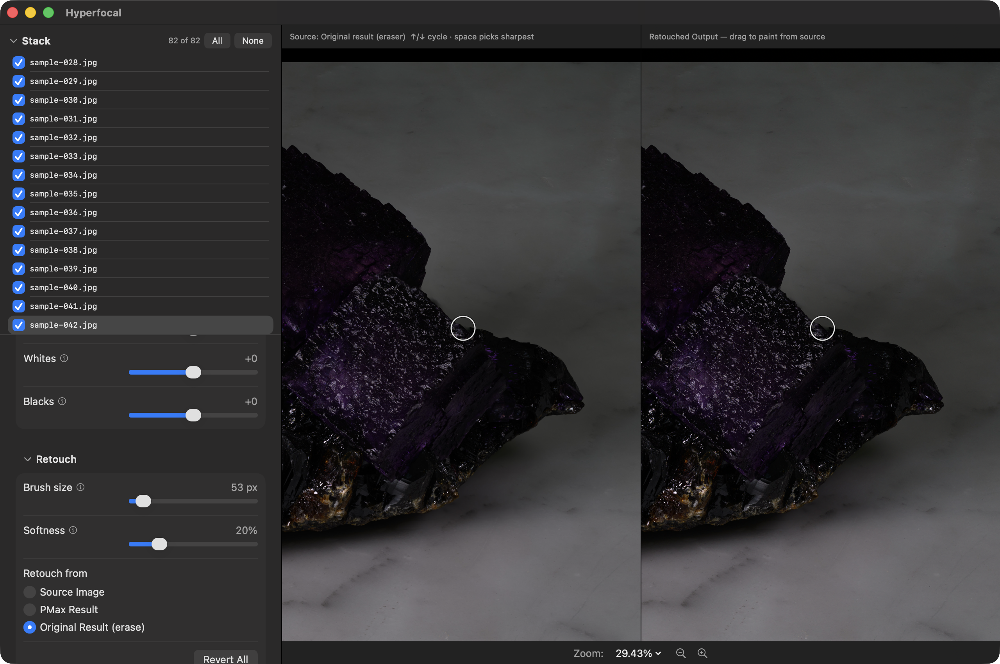
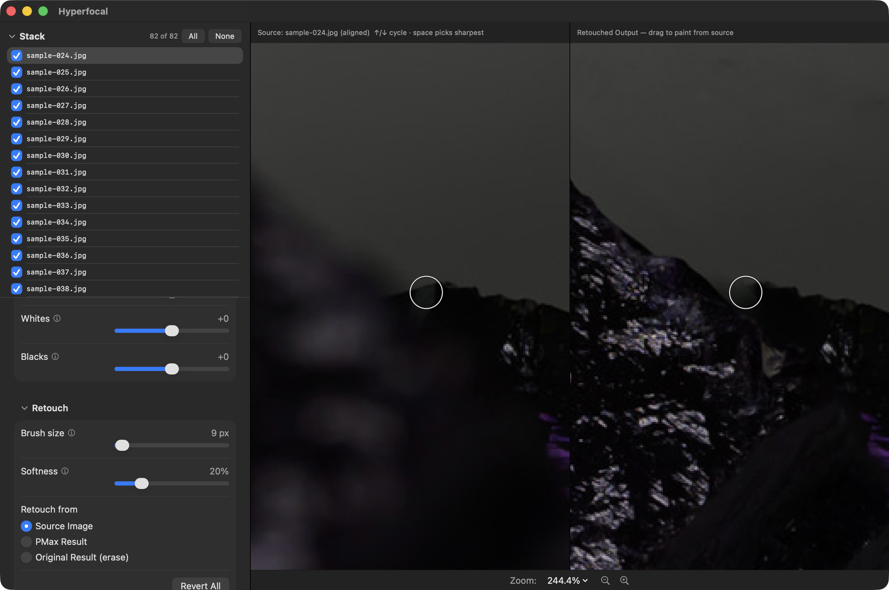
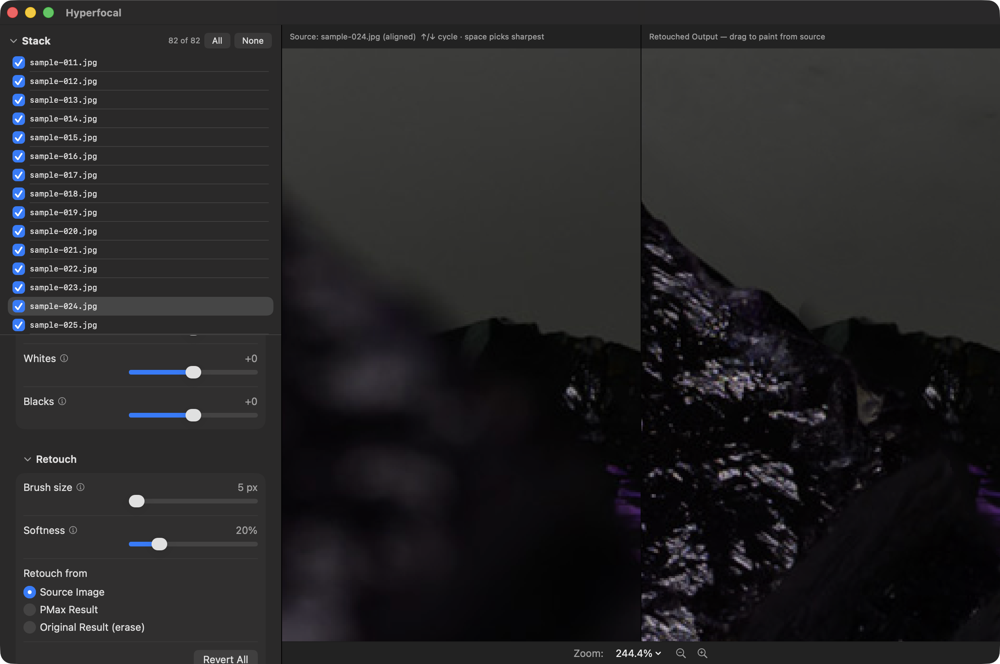
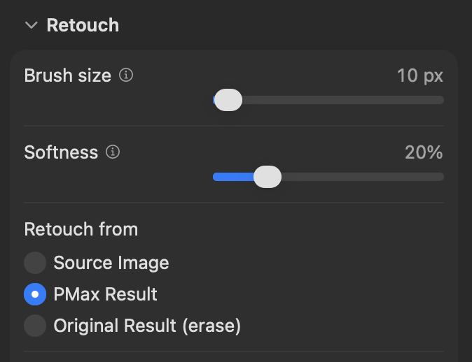
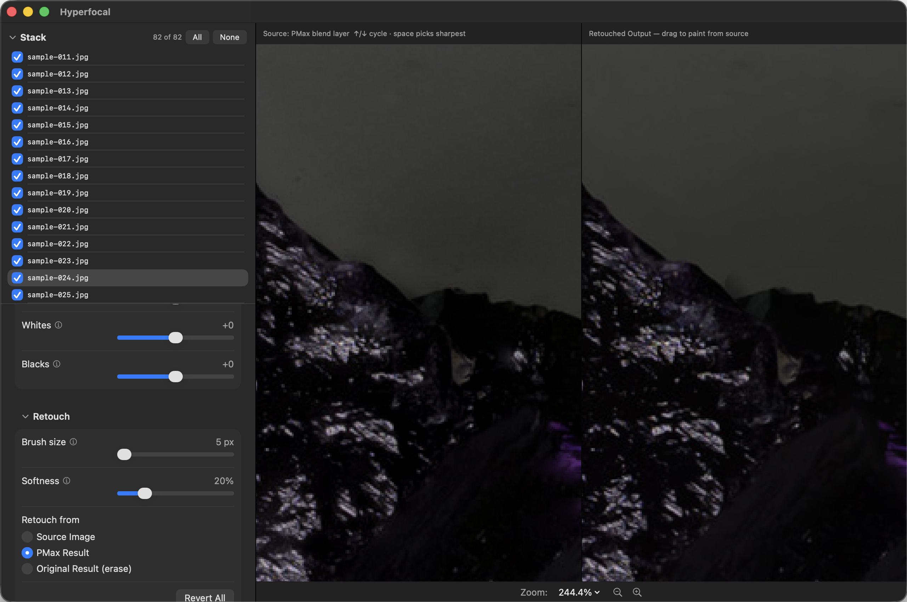
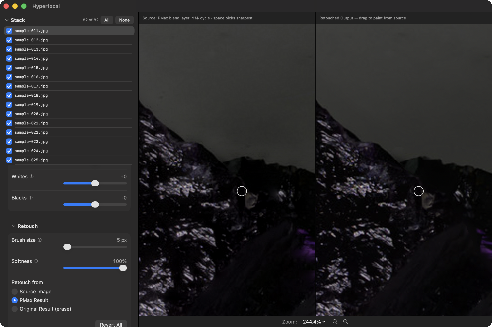

Getting started with Hyperfocal
This walks you through the whole workflow: shooting a stack, importing it, fusing, reading the depth map, fixing what needs fixing, and exporting. If you'd like to follow along with the example macro stack, you can download it here:
Download the sample stack (35 MB, 82 JPEG frames)
1. Shoot a stack
Skip this step if you're using the sample. For real subjects:
- Lock everything but focus. Manual exposure, fixed ISO, fixed white balance, manual flash power.
- Use a relatively large aperture. You may be used to shooting macro at small apertures like f/16 for more depth of field, but that isn't necessary here. Shooting at a moderate aperture like f/5.6 or f/8 will keep your lens in its comfort zone and avoid softening due to diffraction.
- Use a low ISO. If possible, it's best to use your camera's native ISO. Since focus stacking only works with stationary subjects, you can typically get away with long exposures.
- Step focus from front to back (or back to front — direction doesn't matter, as long as it's consistent). Use your camera's automatic focus shift mode, focus bracketing, a macro rail, or careful manual steps.
- Overlap generously. Each frame's zone of sharpness should overlap the next; when in doubt, use smaller steps and more frames. Stacks often consist of dozens to hundreds of frames.
- Keep the camera and subject perfectly still. You will achieve the best results when neither the camera nor subject move even the slightest bit while shooting. Use a sturdy tripod and be aware that even the small things like the slight movement of the floor caused by walking near the camera while it is shooting can cause problems.
- Give yourself a margin. It's best to start the stack before anything is in focus and end it past the point where everything went out of focus. If you try to start and stop the stack perfectly, there's a chance you accidentally fail to get any perfectly clear shots of some part of the subject.
2. Import
Drop the folder of frames onto the Hyperfocal window (or ⌘N and choose it). Keep in mind that:
- Camera raw (NEF, DNG, CR3, ARW, …), TIFF, PNG, and JPEG all work.
- A folder of subfolders becomes a multi-stack project: each folder of images is its own stack in a tree, each with its own result.
- If one folder holds several bursts (determined by gaps in the capture times), Hyperfocal will offer to treat them as separate stacks.
Frames load in capture order and appear in the Stack list with a checkbox each. The checkboxes control whether or not the frames are considered part of the stack. If your stack contains extra frames at the beginning or end that don't have any sharp details, you can uncheck them to speed up the fusion process.
Besides just increasing fusion speed, unchecking out-of-focus images may also help with quality: for instance, if you are shooting against a solid color background, then there is no actual detail there for the algorithm to pick up on. This means that bokeh blur from very out-of-focus elements can look like the only detail there is to key off of, which tricks the algorithm into creating halos around objects. Excluding useless, extremely out-of-focus images helps to mitigate that issue.
3. Fuse
Press Fuse Stack. The pipeline runs in three passes: registration (carefully aligning each frame), then forming the depth map, then rendering.

4. Read the depth map
Switch the Output pane to Depth. Every pixel's brightness encodes which frame it was judged sharpest in — if the frames were shot front to back, then the closest pixels will be bright and the farthest pixels will be dark.

What to look for:
- Smooth ramps across continuous surfaces are correct.
- Salt-and-pepper speckle on featureless areas means the noise floor is too low, and sensor noise is being misinterpreted as actual detail.
- Blotches that follow no structure at subject edges are due to occlusion ambiguity, and may require a different median radius or some retouching work.
5. Set the noise floor
Drag the Noise floor slider and hold it — the Output pane switches to a live preview of the depth map that floor would produce. Raise the floor until halos standing off your subject's edges disappear, and stop before real detail starts dissolving into its neighbors. Then re-fuse. Re-fuses will be faster than the initial fuse because the images don't have to be re-aligned.
6. Adjust tone
Because it duplicates functionality already found in raw processors like Lightroom and Darktable, Hyperfocal's limited built-in editing (Exposure, Highlights, Shadows, etc.) may not immediately appear terribly useful. There are a few reasons you may wish to give it a chance:
- Editing the raw often involves boosting the shadows. If you significantly boost shadow brightness, then fusion errors that would be readily visible in a final image may be invisible at the default tone settings. Using Hyperfocal's built-in tone editor gets you closer to the desired final image and allows you to better see your work while retouching.
- When only simple edits are required, it allows you to go directly to a finished TIFF or JPEG instead of having to go through another raw-processing step.
- Even when you render a
.dngcode> output, the.xmpsidecar means Lightroom / Darktable / etc. can start with the same settings you were already using, so you won't be duplicating effort.
7. Retouch
Press the Start Retouching button. This allows you to paint from the source image in the left pane into the output image in the right pane in order to correct any issues where the generated results are imperfect. You can paint from three different sources:
- Any of the stack's source frames
- The PMax fusion result. PMax is a different focus stacking algorithm with different strengths and weaknesses, and it may produce cleaner results for the problematic areas of your stack.
- The original (DMap) fusion result. This allows you to "erase" back to the original results in case you make a mistake. (Undo is also available for simple cases.)
You will most often be painting from the source frames. You can pick any frame simply by clicking on it in the Stack panel, but there are a few hotkeys to simplify the process:
- Up arrow: selects the previous frame
- Down arrow: selects the next frame
- Space: selects the sharpest frame for the region under the brush. This may not always give you the desired results right at the error location (after all, the whole reason you're retouching that spot is that the automatic results were wrong!), but in that case you can generally just move the brush a little and hit Space again in a nearby spot, fine-tuning from there with the up or down arrow keys if needed.
Click and drag to paint from the selected source. You can edit the brush using the Retouching panel controls, or use [ / ], Option + mouse wheel, or Option + two-finger drag to quickly adjust brush size.
Let's walk through the process of fixing an actual fusion flaw. Fuse the sample stack using the default settings, then zoom in to this spot on the edge of the rightmost fluorite crystal (purple cube).

On a trackpad you can use two-finger pan and pinch zoom to get there, or you can click-and-drag to pan and use and the zoom controls bottom of the window or in the View menu. Either way, zoom in to get a good look at the blurry region shown here.

If you move your mouse to the position shown and press space,
Hyperfocal will automatically select the sharpest source image under the brush
circle, which should be sample-024.jpg. You can also just pick it
manually from the list of frames, or use the up and down arrow keys to switch
between source frames.
This image is now the source that we're painting from. Click and drag in the result image to paint from the source image. Some careful brush strokes should make quick work of the problematic area.

Unfortunately, there's a little bit of a dark blur above the crystal. It turns out there aren't perfect source pixels for this spot in any of the source images: in every single image it's obscured by a halo of blur from the out-of-focus subject on one side or the other.
We can improve the situation by using PMax, a different algorithm which tries to infer the true color of pixels obscured by this sort of blur. PMax produces overall worse results than DMap, which is why it is not Hyperfocal's default algorithm, but it often does a better job in trouble spots like this. We can use both algorithms together to produce optimal results: DMap (the default algorithm) for most things, and occasionally some pixels blended in from the PMax result to clean up trouble spots.
Under the Retouching panel, click on PMax Result as the source to retouch from. The first time you do this, Hyperfocal take some time to build the PMax version of the image, and then it will show up as your new left-pane source image.


We can now carefully paint into the image to pull in the cleaner PMax pixels for this problematic spot, giving us a much better final result.

8. Export
Pick a format in the Export section and press Export Result…:
- TIFF / PNG (16-bit) — full-precision lossless output
- JPEG — smaller lossy files for finished results
- DNG — raw output for further processing in tools like Lightroom or Darktable
With several stacks in a project, Export All Fused… writes every result to one folder in the chosen format.
Finally, ⌘S saves the whole session — frames, results, depth,
and retouch state — as a .hyperfocal project you can reopen
later.